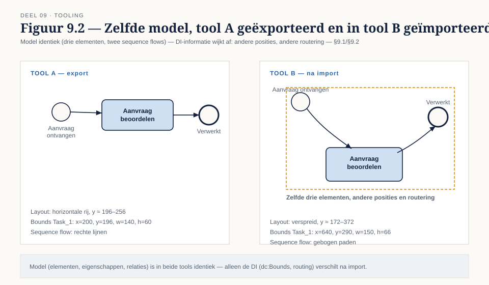
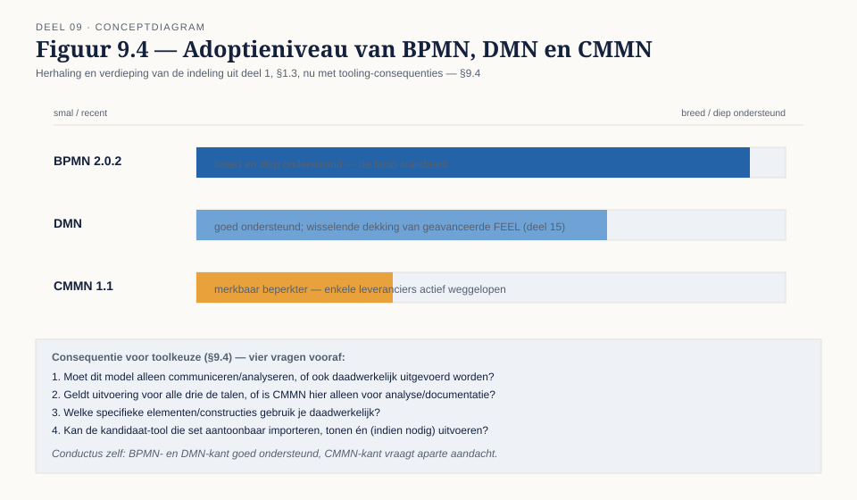
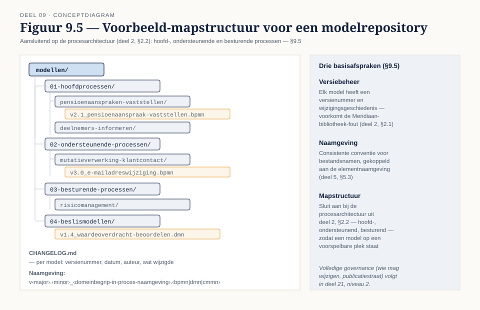

Deel 9 — Tooling, uitwisseling en beheer
Slidedeck · Ductus-cursus BPMN, CMMN & DMN · niveau 1 · deel 9 van 30 · 22 slides
Slide 1 — Titelslide
Tooling, uitwisseling en beheer — Deel 9
Beeldmerk, cursustitel
Spreeknotitie: Minder tekenen vandaag, meer onder de motorkap kijken.
Slide 2 — Leerdoelen
Na vandaag kun je…
Vijf leerdoelen uit de reader
Spreeknotitie: Kort.
Slide 3 — Wat is een diagram eigenlijk?
Een weergave van een onderliggend bestand
Diagram naast een fragment ruwe XML
Spreeknotitie: Elk diagram dat je tot nu toe maakte, is XML onder de motorkap.
Slide 4 — Twee soorten informatie
Het model — en hoe het eruitziet
 Figuur 9.1, model-gedeelte en DI-gedeelte apart gemarkeerd
Figuur 9.1, model-gedeelte en DI-gedeelte apart gemarkeerd
Spreeknotitie: Dit onderscheid verklaart bijna alle uitwisselingsproblemen die je tegenkomt.
Slide 5 — Opdracht 1
Markeer model versus weergave in een XML-fragment
Werkboekverwijzing, timer 20 minuten
Spreeknotitie: Individueel, plenair nabespreken.
Slide 6 — Drie plekken waar het misgaat
Extensies · versieverschillen · DI-ondersteuning
Drie iconen met korte toelichting
Spreeknotitie: Introductie vóór de voorbeelden.
Slide 7 — Extensies
Elke tool voegt iets eigens toe
Voorbeeld: Flowable-specifieke attributen in een namespace
Spreeknotitie: Een andere tool negeert ze, of struikelt erover.
Slide 8 — Hetzelfde model, ander diagram
Correct geïmporteerd — en toch anders

Figuur 9.2
Spreeknotitie: Dit is precies waarom "het opent" niet hetzelfde is als "het klopt visueel".
Slide 9 — De praktische toets
Test vóór je committeert, niet erna
Vier stappen: exporteer, importeer, controleer elementen, controleer DI
Spreeknotitie: Doe dit voordat honderd modellen al gemaakt zijn.
Slide 10 — Opdracht 2
Exporteer, inspecteer, importeer je eigen model
Werkboekverwijzing, timer 40 minuten
Spreeknotitie: Individueel in Conductus. Dit is de enige echt technische opdracht van vandaag.
Slide 11 — Vier toolcategorieën
Open source · enterprise-suite · EA-repository · low-code
 Figuur 9.3
Figuur 9.3
Spreeknotitie: Geen categorie is universeel de juiste keuze.
Slide 12 — Waar elke categorie sterk in is
Aanpasbaarheid · volledigheid · architectuurkoppeling · snelheid naar applicatie
Figuur 9.3, sterktes uitgelicht
Spreeknotitie: De vraag is welk gebruiksdoel het zwaarst weegt.
Slide 13 — Opdracht 3
Kies de toolcategorie — vier situaties
Werkboekverwijzing, timer 20 minuten
Spreeknotitie: Tweetallen.
Slide 14 — Niet elke taal even breed ondersteund
BPMN breed, DMN goed, CMMN beperkter

Figuur 9.4 — herhaling en verdieping van deel 1
Spreeknotitie: Geen oordeel over de taal, wel over de tooling.
Slide 15 — Vier vragen vóór een toolkeuze
Communiceren of uitvoeren? Voor alle drie de talen? Welke elementen precies? Kan de tool dat?
§9.4 als genummerde lijst
Spreeknotitie: Introductie vóór de toepassing op Meridiaan.
Slide 16 — Conductus als voorbeeld
BPMN en DMN uitvoerbaar, CMMN vooralsnog analyse
Korte tekstslide
Spreeknotitie: Precies de afweging uit dit hoofdstuk, toegepast op het platform dat je zelf gebruikt.
Slide 17 — Opdracht 4
Stel de vier vragen voor Meridiaan
Werkboekverwijzing, timer 20 minuten
Spreeknotitie: Individueel, put uit eigen modellen van deel 3-8.
Slide 18 — Van los model naar repository
Versiebeheer · naamgeving · mapstructuur

Figuur 9.5
Spreeknotitie: Drie basisafspraken die niet mogen ontbreken.
Slide 19 — Wat er misgaat zonder versiebeheer
De Meridiaan-bibliotheek, nog een keer
Herinnering aan deel 2, §2.1
Spreeknotitie: Hetzelfde probleem, nu vanuit het perspectief van repositorybeheer.
Slide 20 — Vooruitblik op deel 21
Dit was de basis — governance komt in niveau 2
Korte tekstslide
Spreeknotitie: Wie mag wijzigen, publicatiestraat, kwaliteitsmeting — dat is deel 21.
Slide 21 — Opdracht 5
Stellingen
Vier stellingen uit het werkboek
Spreeknotitie: Plenair, indien tijd.
Slide 22 — Vooruitblik
Deel 10 — examentraining en capstone
Aankondiging: het einde van niveau 1
Spreeknotitie: Zorg dat je modellen uit deel 3-8 compleet en toegankelijk zijn.